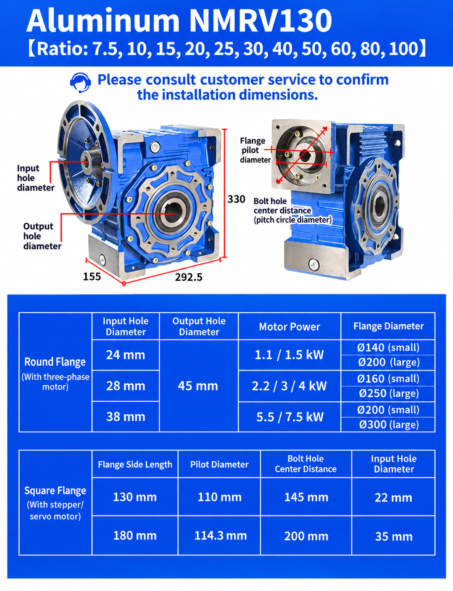

NMRV130 Installation Dimensions
The NMRV130 installation drawing shows the main gearbox envelope, input and output interfaces and available motor-flange arrangements.
| Dimension | Illustrated size |
|---|---|
| Overall height | 330 mm |
| Overall length | 292.5 mm |
| Base dimension | 155 mm |
| Hollow output bore | 45 mm |
| Available ratios | 7.5–100 |
NMRV130 Technical Specifications
| Specification | NMRV130 |
|---|---|
| Model | RV130 / NMRV130 |
| Gear type | Worm gear reducer |
| Housing | Aluminum alloy |
| Reduction ratio | 7.5:1–100:1 |
| Hollow output bore | 45 mm |
| Round-flange input bore | 24 / 28 / 38 mm |
| Output options | Hollow shaft / compatible solid-shaft arrangement |
| Motor connection | AC motor / stepper / servo with confirmed adapter |
| Mounting | Multiple mounting positions |
NMRV130 Motor Flange Options
Different input flanges can be selected according to the motor shaft, frame and duty.
| Input bore | Illustrated motor-power examples | Illustrated flange diameters |
|---|---|---|
| 24 mm | 1.1 / 1.5 kW | Ø140 / Ø200 mm |
| 28 mm | 2.2 / 3 / 4 kW | Ø160 / Ø250 mm |
| 38 mm | 5.5 / 7.5 kW | Ø200 / Ø300 mm |
These are configuration references, not universal combinations. Confirm motor frame, voltage, frequency, shaft diameter, flange pilot, bolt pattern, ratio, load and duty before production. See the SMK electric motor page and motor-to-gearbox matching guide.
NMRV130 Square Flange Dimensions
Square adapter flanges are available for compatible stepper and servo motors.
| Flange size | Pilot diameter | Bolt-hole center distance | Input bore |
|---|---|---|---|
| 130 mm | 110 mm | 145 mm | 22 mm |
| 180 mm | 114.3 mm | 200 mm | 35 mm |
For a specific servo or stepper motor, send the motor drawing so the adapter can be checked before production.
NMRV130 Ratio and Output Speed
Common ratios include 7.5, 10, 15, 20, 25, 30, 40, 50, 60, 80 and 100:1.
Example assumption: 1400 rpm rated motor.
| Ratio | Theoretical output speed |
|---|---|
| 10:1 | 140 rpm |
| 20:1 | 70 rpm |
| 30:1 | 46.7 rpm |
| 40:1 | 35 rpm |
| 50:1 | 28 rpm |
| 60:1 | 23.3 rpm |
| 80:1 | 17.5 rpm |
| 100:1 | 14 rpm |
Actual output speed may vary because of motor slip, load and operating conditions. Ratio alone does not confirm output torque or thermal suitability. Use the ratio and torque calculator for an initial estimate.
How to Select an RV130 / NMRV130 Gearbox
Before selecting the gearbox, confirm:
- Motor power, rated speed, voltage and frequency
- Required output speed or ratio
- Required continuous and peak output torque
- Output shaft diameter, keyway and arrangement
- Motor flange, pilot, shaft and bolt-pattern dimensions
- Mounting position, operating hours and starts per hour
- Service factor, shock load and ambient temperature
Review the worm gearbox service-factor guide and NMRV mounting-position guide. For replacement projects, send the existing nameplate and dimensional drawing so installation compatibility can be checked.
Typical NMRV130 Applications
NMRV130 worm reducers can be considered for conveyor systems, packaging machinery, mixers, agricultural equipment, material-handling systems and industrial automation. Conveyor projects should also confirm belt speed, drum diameter, conveyed load, incline and starts per hour; see the conveyor gearbox selection page.
Frequently Asked Questions
What is the NMRV130 output bore size?
The illustrated configuration uses a 45 mm hollow output bore. Confirm the keyway, tolerance and selected output arrangement.
What ratios are available for NMRV130?
Common ratios include 7.5, 10, 15, 20, 25, 30, 40, 50, 60, 80 and 100.
Can NMRV130 connect to a servo motor?
Yes, when a compatible square adapter is engineered and the motor shaft, pilot and bolt pattern are confirmed from the motor drawing.
What motor power can be used with NMRV130?
The illustrated flange configurations cover motor powers from 1.1 to 7.5 kW, but allowable motor power depends on ratio, operating conditions, thermal capacity, service factor and gearbox capacity.
Send Your NMRV130 Requirements
For an NMRV130 recommendation, send motor power, motor speed, required ratio or output speed, required torque, mounting position, output-shaft requirement and motor-flange drawing. SMK Transmission can review the configuration and provide a dimensional drawing and quotation.